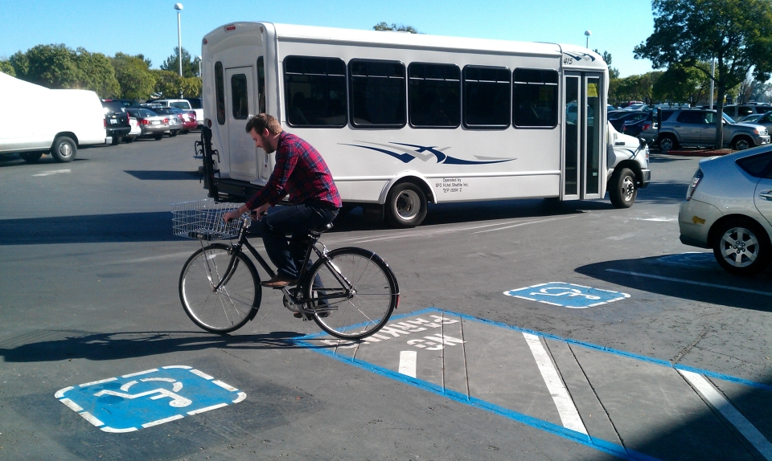
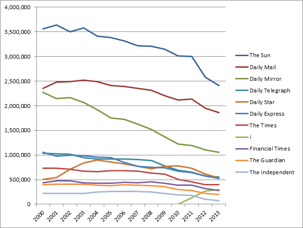
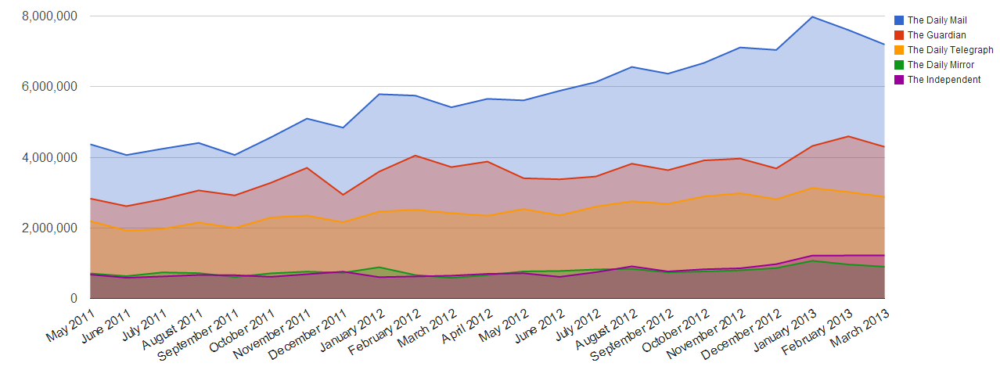
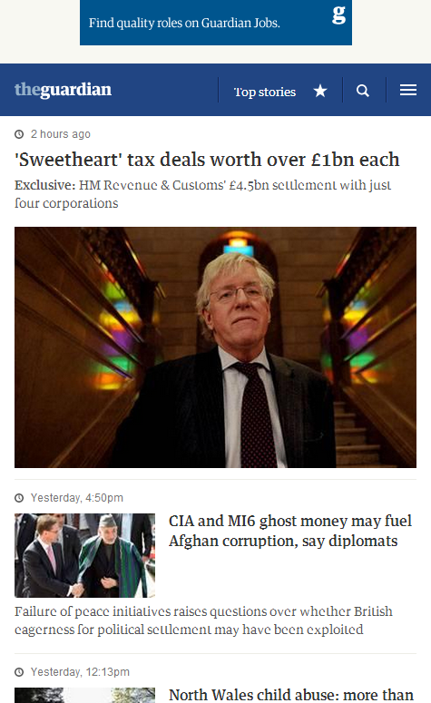

Responsive design
at the Guardian
or
How I learned to stop worrying
and love the mobile web
with Matt Andrews
client-side web developer

@mattpointblank
Who is this guy?
(yeah, that’s right, animated slides. sue me.) 
Matt Andrews: web developer
Working at the Guardian since summer 2010
- client-side developer
- helped build the new Guardian responsive mobile site
- also worked on the Guardian’s Facebook app
- currently working on our liveblogging platform
- interested in future of journalism and tech
- has beard
First: a quick exercise
Don’t worry, minimal physical effort is required
Please raise your hand if you’ve bought a newspaper
in
the last twelve months.
Keep your hand up if you’ve bought one in...
- the last month
- the last week
- the last day
You’re not alone
This isn’t exclusive to Port80 attendees:
UK newspaper circulation, 2000-2013
Source: Stuart Brandwood / ABCs
You are alone
(this slide to be used if everyone’s still buying newspapers)
Source: Stuart Brandwood / ABCs
It’s not all doom and gloom
We’ve just moved our news reading to the web
UK news website daily unique visitors, May 2011 - March 2013
Source: Guardian / ABCEs
therefore
Responsive design is more important than ever.
(and not just for news websites)
That’s why we launched m.guardian.co.uk.
Why did we need to
“go responsive”?
Three key reasons:
- Third-party hell Dependent on external company to update site
- Template hell 100+ templates, 600+ components: maintenance nightmare
- Rise of mobile Between 15-30% of Guardian traffic now mobile
Five key techniques
How we built it & what we learned
- “Cutting the mustard” (© BBC)
- Progressive enhancement
- Detect features, not devices
- Swimlaning
- No “big bang” releases
1. The mustard
Specifically: cutting it.
Not all browsers are created equal.
an opportunity to wipe
the client-side development
slate clean
- Tom Maslen, BBC developer
Pixel perfect is
an anti-pattern.
- me
Modern browsers
One test for the future
isModernBrowser: (
'querySelector' in document &&
'addEventListener' in window &&
'localStorage' in window
)HTML4 vs HTML5
Don’t punish your users
<script type="text/javascript" src="jquery.js"></script>
<!-- 35kb even when gzipped -->$('.expand-section').click(function(){
doSomething();
});Do they still need to download polyfills for ancient browsers?
For modern browsers
var expander = document.querySelector('.expand-section');
expander.addEventListener('click', function(){
doSomething();
});75%+ of Guardian mobile traffic is
recent iOS and high-end Android devices.
Why make these devices download a bunch of JS they don’t need?
ASSUMPTIONS.
You know who they make an ass of.
This is a new web. Start afresh.
- Mobile first
- Focus on performance More on this in the next section...
Five key techniques
How we built it & what we learned
- “Cutting the mustard” (© BBC)
- Progressive enhancement
- Detect features, not devices
- Swimlaning
- No “big bang” releases
Obligatory Mitch Hedberg:
An escalator can
never break – it can only become stairs.
- Mitch Hedberg (a comedian, not a web developer)
Source: Scott E. / Flickr
2. Progressive enhancement
Once you’ve cut the mustard, what do you do with it?
- We now have two “buckets” of browser types
- The majority of them receive our “rich” experience
- But they’re still not all created equal
Mobile first
What is your core content?
We figured out what our “core” content was:
what were the things that had to be there, no
matter what?
Anything non-core could be loaded in later
via AJAX once the app was
“bootstrapped”.
Worth noting the potential SEO impact of this, though: some stuff won't be visible to spiders any more, but then your page will be quicker as a tradeoff.
Responsive images
A problem looking for a hundred solutions
- For now, we just assume everybody is on a slow connection
- Therefore: everyone gets 140px wide thumbnails (even for large images)
- If the browser passes our tests (more on this later), they get upgraded images
- Biggest barrier: our API (currently) only has images up to 460px wide.
- (so yes, everybody downloads two images currently)
- BBC exploring serving no images in HTML and adding via JS
- We're currently experimenting with a dynamic image server for custom cropping
Webfonts: core?
You’d think so, but no.
- Remember: pixel-perfect is an anti-pattern
- Why maintain dozens of competing font formats?
- Pick the best formats (TTF and WOFF, for us) and give it to supporting browsers
Webfont performance
We fetch the fonts in the background on first pageload then store them as base64-encoded strings in localStorage.
This is primarily to avoid expensive HTTP requests on mobile for later visits (and because mobile caching is unreliable at the best of times)
Icons and graphics
Simple retina images for UI components
Auto-generated PNG sprite for non-retina displays:
.i-search {
background-position: -313px -55px;
width: 14px;
height: 14px;
}...replaced with scalable SVG (where supported):
.svg .i-search {
background-image: url(data:image/svg+xml;base64,PHN2ZyB4bWxucz0iaHR0cDovL3d3dy53My5vcmcvMjAwMC9zd…E1LjM1NSwxNy4wMDQgMTEuMDgxLDEyLjczNCAxMi43MzUsMTEuMDc5Ii8+PC9nPjwvc3ZnPg==)
}Dump an image in the folder, run the script: BOOM. Retina images.
Try it yourself: Spricon (based on Filament Group's GruntIcon plugin)
Five key techniques
How we built it & what we learned
- “Cutting the mustard” (© BBC)
- Progressive enhancement
- Detect features, not devices
- Swimlaning
- No “big bang” releases
Signs you’re doing it wrong
This isn’t responsive design:
@media only screen and (max-width: 320px) {
/* mobile-specific CSS goes here */
}This is even worse:
<link rel="stylesheet" type="text/css" href="iphone.css" />Does your design really just happen to “break” at iOS device widths?
3. Detect features, not devices
As with browsers, not all devices are created equal
Do you really want to maintain a regular expression like this?
/Mobile|iP(hone|od|ad)|Android|BlackBerry|IEMobile|Kindle
|NetFront|Silk-Accelerated|(hpw|web)OS|Fennec|Minimo
|Opera M(obi|ini)|Blazer|Dolfin|Dolphin|Skyfire|Zune/Slight copout: we maintain a regular expression like this on guardian.co.uk (for now!)
Device size != network speed
We already know that “on the go” isn’t always true for mobile users
We’ve all been here:
Source: Eelke Dekker / Flickr
... and we’ve also been here:
Source: Cea / Flickr
Measuring connection speed
How we had to do it in the bad old days
// at the top of your JS code:
var start = Date.now();
// your application code goes here, then:
var timeTaken = Date.now() - start;This is bad because...
- it causes the Observer’s Paradox (adds overhead code to page)
- it only starts timing once the JS payload arrives
- uses the horrible joke that is JavaScript’s Date() object
Enter: Navigation Timing API
The magical window.performance object
Here’s what you can do today (albeit only in IE > 9, desktop Safari, Opera, Android browser > 4, iOS Safari > 6):
var perf = window.performance;
var start = perf.timing.requestStart; // just before page is requested
var end = perf.timing.responseStart; // first byte received
var total_time = end - start;Independent of render time (once connected), this tells us the effective network speed of the user’s device.
What can I use that for?
Responsive images, perchance?
if (total_time < 1000) {
// function to upgrade lo-res images to hi-res where appropriate
upgradeImages();
}A small screen doesn’t always mean a small image: what about retina displays? Connection speed helps us decide what to deliver.
Touch devices
Simple, right?
function hasTouchScreen() {
return ('ontouchstart' in window) ||
window.DocumentTouch &&
document instanceof DocumentTouch;
}Actual m.guardian.co.uk production code:
// only enable swiping for touch devices, duh.
if ( hasTouchScreen() ) {
// swipe-enabling code
} else {
// alternative ajax/keyboard nav code
}Devices with keyboards AND touchscreens?!11
Thanks, Google.
Source: David Paul Morris / Bloomberg
New Pointer Events API could make this kind of thing easier.
A word on content
Do we need different content for different devices?
Warning: mildly controversial opinion ahead.
If a user is on a mobile device, we should show news about the latest iPhone more prominently
- a Guardian editor
That sounds reasonable...
... right?
If I’m sitting at home listening to the Beatles on vinyl, then go outside with my iPod, I don’t start listening to Justin Bieber.
Your tastes don’t magically change when you switch device.
If I care about the new iPhone, I want it to be prominent
whatever device I’m on.
Mobile users aren’t some homogenous group. Personalise content to users by interest, not hardware.
Five key techniques
How we built it & what we learned
- “Cutting the mustard” (© BBC)
- Progressive enhancement
- Detect features, not devices
- Swimlaning
- No “big bang” releases
Source: Brian Cantoni / Flickr
4. Swimlaning
Keeping apps in line
Hugely important for large-scale apps
It means separating concerns so one part
of the app can’t bring down another
A practical example:
How we broke guardian.co.uk
...by upgrading jQuery
- In late 2011 we upgraded jQuery from 1.4.3 to 1.6.2
- We forgot that jQuery made $.ajax append a cachebust querystring by default in 1.6.2 (eg /get/comments/foo?_=5345334)
- All calls to our commenting platform began requesting uncached data
- Our commenting platform fell over
- ... taking most of the site with it, because it wasn’t “swimlaned”
- (luckily our emergency caches made this less visible to users)
Are you at risk?
Think about your own website for a moment. Do you have any hard dependencies?
- Are any of them external? (Twitter, Facebook, Google etc)
- This could be a SPOF (Single Point of Failure)
- Good tool for testing these at SPOF-O-Matic and WebPageTest.
A swimlaned Guardian
- Each app (article, video, gallery, etc) has its own set of servers
- If one fails, everything else carries on regardless
- We enforce “one blocking call per page” to minimise risk
Deployments became painless
A simple command line tool made things trivial
$ gu deploy --prod --name gallery --build 123Deploy everything individually: no need to bring down the entire site.
Updating a line of CSS should be as easy to deploy as it is to write.
(All of this makes use of Amazon’s EC2 API and a bit of Ruby)
It’s not all hardware, though
In-code swimlaning protects you too
Things like AMD-based JavaScript is a form of swimlaning:
require(['jquery'], function($){
$('body').css('font-family', 'comic-sans');
});This copy of jQuery will never conflict with others, even if dodgy adverts load their own copies or someone in another application upgrades theirs.
Swimlaned CSS
A bit harder to sandbox, but do-able
We use Jonathan Snook’s SMACSS to keep our CSS object-oriented.
It means less of this:
body.tone-index #box .two-col h2,
body.tone-index #box #main-trailblock h2
{
padding-top: 4px;
}And more of this: (SCSS syntax)
.sub-section-head {
border-bottom: 1px solid $mushroom;
}Web Components might make this easier in future.
What couldn't we swimlane?
There's always one...
Advertising: it's the bane of our lives.
Ads render code like this:
Genuine, production-quality advertising code
document.write('\n');
document.write('\n');
document.write('\n');
document.write('\n');
document.write('\n');
document.write('\n');
document.write('\n');
document.write('<script type="text/javascript">\n');
document.write('//<![CDATA[\n');
document.write('var filePath = "http://imageceu1.247realmedia.
com/RealMedia/ads/Creatives/Guardian/USAY_Compare_May12_PBR_ROS_Leader/banner468x60.
swf/1335778817";\n');
document.write('var TFSMFlash_PRETAG = "";\n');
document.write('var TFSMFlash_POSTTAG = "";\n');
document.write('var TFSMFlash_VERSION = "9";\n');
document.write('var TFSMFlash_WMODE = "opaque";\n');Responsive ads?
Not until the ad networks catch up
We can't make all our ads for all our partners.
We need the industry to catch up.
We've tried swimlaning ads by putting them inside <iframe>s – this worked for some but not all (many need to pop out of their container or interact with the DOM). This has partially worked for external ads, though.
Ultimately we're still trying to figure this one out: a single dodgy ad can destroy all our hard work (and even get us blocked for malware by Chrome, occasionally...)
Five key techniques
How we built it & what we learned
- “Cutting the mustard” (© BBC)
- Progressive enhancement
- Detect features, not devices
- Swimlaning
- No “big bang” releases

Source: Scott Swigart / Flickr
5. No “big bang” releases
The creation of something where there was nothing before
You’ve probably all been involved with one:
- Hard “launch date” deadline
- No / little public exposure to the product/design before launch
- Big expectation that everything is “perfect” up-front
Why is this a bad thing?
- The web’s not meant to be “perfect” or “finished” (anti-pattern!)
- A hard deadline is more of a challenge when working using Agile
- If you spend a year building something before putting it in front of users you’ve already failed
We did our beta testing in public:
Left: early design (approx April 2012), right: current design (May 2013)
beta.guardian.co.uk
Working in the open for the win
- Easy to show to senior stakeholders
- Gathered important user feedback early on
- Stress-tested the system before launch
- We heard from edge case users directly
Testing is hard.
(...and even harder if you wait till launch day)
- It’s impractical to try to test responsive designs on every possible device that might access them
- We optimised for the most common devices (according to analytics)...
- ...then relied on RUM (Real User Monitoring) to tell us the rest
The upshot of all of this?
No surprises on go-live day.
Everything went exactly as we expected it to.
(woohoo!)
Some closing thoughts
If you remember nothing else, remember these four points:
1. Focus on what is “core” for your application / website
...and make it really, really quick.
Anything non-core can come later.
2. Don’t be afraid to
build multiple experiences
Segment your users and build around features,
not in spite of them.
Cutting the mustard is a really valuable technique and bakes progressive enhancement into the site from the very beginning. Don’t get hung up on “pixel perfect” everywhere.
3. Release early & often
Don’t spend forever with your code behind locked doors
It’s an oldie but a goodie. “Perfect” is boring. Shipping is cool.
4. Question assumptions
This is a new web. Start from scratch.
...including responsive design itself. It won’t always be like it is today!
The end
A couple of notes
- Open source: all the responsive code is public on Github.
- This presentation: mattandrews.info/talks/port80-2013/
- We're hiring! Looking for front-end and back-end developers.
- You can find me at @mattpointblank on twitter